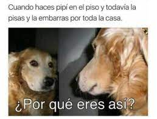

México calcula que el 70 por ciento de las armas traficadas a México provienen de Estados
Unidos, según la Secretaría de Relaciones Exteriores.
En 2019, al menos 17 mil homicidios estuvieron vinculados con esas armas.
Alejandro Celorio, asesor legal de la Secretaría de Relaciones Exteriores, dijo a la prensa
este miércoles que los daños provocados por las armas traficadas equivaldría a entre 1.7 por
ciento y 2 por ciento del PIB mexicano.
El gobierno pedirá una compensación de al menos 10 mil millones de dólares, dijo. El PIB
mexicano fue de 1.2 billones de dólares el año pasado.
Armas incautadas.
Donde se venden estas armas
14/11/21
10 países donde se venden más armas
Corea del Sur
Italia
Israel
España
Reino Unido
China
Alemania
Francia
Rusia
Estados Unidos
grafica.
La relación de Estados Unidos y México de acorde al tema.
9/02/22
La venta de armas de Estados Unidos y México.
El tráfico de armas de Estados Unidos (EEUU) hacia México es un tema central de la
relación bilateral,
estrechamente relacionado con el tráfico de drogas y particularmente con la violencia
letal desplegada por
las organizaciones mexicanas de traficantes. La violencia es un recurso potencial de
cualquier negocio
ilegal, pero su escalamiento actual está en gran medida asociado a la disponibilidad de
armas de alto
poder como las que se trafican desde EEUU hacia México. También, a las divisiones y
disputas entre los
cabecillas de las organizaciones de traficantes por los liderazgos y la hegemonía en el
campo del tráfico
de drogas, las rutas, los mercados, otros ámbitos de diversificación de la renta
criminal y de poder, y a su
creciente enfrentamiento con las policías y las fuerzas armadas. Sin olvidar, por
supuesto, que las propias
debilidades de las instituciones de seguridad y procuración de justicia del Estado
mexicano, y las
decisiones de quien lo dirige para disminuir o neutralizar las capacidades de las
organizaciones criminales
en esas circunstancias, son condiciones de posibilidad que incentivan la violencia de
los traficantes de
drogas ilegales.
Si bien es difícil identificar el número exacto de armas en los Estados Unidos, cifras
del Center for
American Progress estiman que existen alrededor de 300 millones de armas en circulación
en ese
país. Aunado a lo anterior, tanto la fabricación, como las importaciones de armas de
fuego han
aumentado en los últimos años. Durante 2016 se importaron 5,137,771 armas de fuego,
mientras
que en 2015 se fabricaron 9,358,661 armas.
Algo para reljarle un poco el asunto
18/02/22

Mi opinión en el Tema
2/05/22
Mi opinión como Estudiante
Afortunadamente jamás me ha tocado estar en una situación de un "school shooting" pero si he
tenido el testimonio de personas cercanas a mi, al principio de este blog se discutieron
muchas opiniones y creo que la mía en un tema tan controversial podría servir de Reflexión.
Quiero empezar el tema con la experiencia de una amistad, la cual estudiando en la ciudad de
Vancouver, Canadá. Esta amistad estuvo cursando segundo de prepa en aquel entonces y un día
al igual que el resto, una amenaza de bomba junto con una pistola llegó en la mañana, a lo
que siguieron el Protocolo de seguridad ante una situación asi. Es impresionante incluso la
idea de que ya existan protocolos para el fénomeno y no soluciones para el mismo.
investigación
9/02/22
La violencia en México
La violencia en México ha dado pie a graves y crecientes consecuencias, como el
desplazamiento interno forzado y la migración masiva, traumas psicológicos, la falta de
justicia, pérdidas económicas y ataques al ejercicio del derecho de libertad de
expresión y
al periodismo. La guerra y el comercio de armas sólo han hecho que los
problemas empeoren.
Se sabe que al menos 37 mil 435 personas, de diciembre de 2006 a junio de 2018, han sido
víctimas de desapariciones forzadas en México, mientras que a la par se han cometido 121 mil
35 homicidios con arma de fuego, de los cuales 16 mil 898 ocurrieron tan sólo durante 2017.
La gran mayoría de estos crímenes continúan impunes, sin la apertura de investigaciones
penales o sentencias, y sin una reparación integral para las víctimas. Datos oficiales,
tanto de México como de Estados Unidos, revelan que la exportación legal de armas y
explosivos desde el vecino país del norte a la República Mexicana está en su más alto nivel,
habiendo alcanzado el monto de 122 millones de dólares entre 2015 y 2017, lo que equivale de
acuerdo a la Oficina del Censo de los Estados Unidos– a doce veces lo exportado entre 2002 y
2004.
Dicho crecimiento coincide con un aumento en México de la producción nacional de armas
destinadas para uso militar. En junio de 2018, doce congresistas estadounidenses declararon,
mediante una carta enviada a los Secretarios de Estado y Defensa de los Estados Unidos, que
“el uso de las fuerzas militares mexicanas en la guerra contra las drogas ha resultado en un
dramático aumento de las violaciones a los derechos humanos, incluidas la tortura, las
desapariciones forzadas y las ejecuciones extrajudiciales”. Por ende, pidieron “una
evaluación completa y pública de la Iniciativa Mérida, así como una revisión de la ayuda que
brinda Estados Unidos a México en cuanto a seguridad y venta de armas”.
Otros miembros del Congreso han solicitado también un reporte de la Iniciativa Mérida a
la Oficina de Auditoría del Gobierno de los Estados Unidos.
Propuesta militar
De la mano con el incremento en el número de operaciones militares se elevó,
además, el presupuesto militar, más que nada para la compra, mantenimiento y
construcción de armas. El presupuesto designado a Estabilidad Nacional
incrementó 18.8 por ciento entre 2017 y 2018, al subir de 4.4 mil millones de dólares en
2017 a 5.2 mil millones de dólares en 2018: un incremento de 826 millones de dólares. La
milicia fue el más beneficiado con esa levanta, puesto que el presupuesto de 2018
designado a las fuerzas de estabilidad se formó por 152.2 millones de dólares para la
SEGOB, 3 mil 600 millones de dólares para la milicia y 1.4 mil millones para la SEMAR
sedena
sedena crea armas de fuego para los militares mexicanos, no para la policía u
organismos privados,strong y según con sus reportes anuales esa producción
se elevó a 23 mil 600 rifles entre 2016 y 2017. En general, entre 2007 y 2017, los
costos de la sedena que corresponden a la producción de armamento superaron los 1.4 mil
millones de dólares.
 El
cancer de la sociedad
El
cancer de la sociedad

 Algo para reljarle un poco el asunto
Algo para reljarle un poco el asunto Mi opinión en el Tema
Mi opinión en el Tema Cantidad enorme de arsenal.
Cantidad enorme de arsenal.